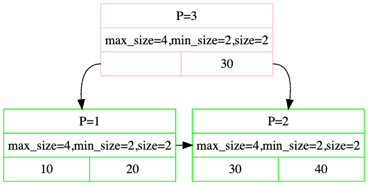

Project #2 - B+Tree
记得从 bustub 仓库拉取最新代码。不要将你的代码发布到公开的 GitHub 仓库。
概述
在本项目中，你将在你的数据库系统中实现一个 B+树索引。 B+树是一种平衡搜索树，其中内部页引导搜索，叶页包含实际的数据条目。 该索引提供快速的数据检索，无需搜索数据库表中的每一行，从而实现快速的随机查找和有序记录的高效扫描。 你的实现需要支持线程安全的搜索、插入、删除（包括节点的分裂和合并），以及一个支持有序叶页扫描的迭代器。你需要完成以下任务：
你在项目 #2 中的工作依赖于你在项目 #1 中实现的缓冲池和页守卫。 如果你的项目 #1 解决方案不正确，你必须修复它才能成功完成本项目。 本项目必须独立完成（即不允许组队）。
- 发布日期： Sep 30, 2024
- 截止日期： Oct 27, 2024 @ 11:59pm
已经提醒过你了！
项目规范
我们提供了定义你必须实现的 API 的存根类。你不应修改这些预定义函数的签名；否则，我们的测试代码将无法工作，你将无法获得本项目的学分。 同样，你不应从我们提供的代码中删除现有的成员变量。 你可以向这些类添加函数和成员变量来实现你的解决方案。
在开始之前，运行 git pull public master 从公共 BusTub 仓库拉取最新代码。
任务 #1 - B+树页面
你必须实现以下三个 Page 类来存储你的 B+树数据。
基类页
这是一个基类，内部页和叶页都继承自它，仅包含两个子类共享的信息。 B+树页具有以下字段：
| 变量名 | 大小 | 描述 |
|---|---|---|
| page_type_ | 4 | 页类型（无效页/叶页/内部页） |
| size_ | 4 | 页中键值对的数量 |
| max_size_ | 4 | 页中键值对的最大数量 |
你必须通过仅修改其头文件（src/include/storage/page/b_plus_tree_page.h ）和对应的源文件（src/storage/page/b_plus_tree_page.cpp ）来实现 B+树页。
内部页
内部页（即内部节点）存储 m 个有序键和 m + 1 个子指针（即 page_id），指向其他 B+树页。
这些键和指针在内部表示为键/page_id 对的数组。
由于子指针数量比键数量多一个，key_array_ 中的第一个键（见 src/include/storage/page/b_plus_tree_internal_page.h ）被设为无效，查找应始终从第二个键开始。
在任何时候，每个内部页应至少半满。在删除期间，两个半满的页可以合并，或者可以重新分配键和指针以避免合并。 在插入期间，一个满的页可以分裂为两个，或者可以重新分配键和指针以避免分裂。 这些是你在实现 B+树时将做出的众多设计选择的示例。
你必须通过仅修改其头文件（src/include/storage/page/b_plus_tree_internal_page.h ）和对应的源文件（src/storage/page/b_plus_tree_internal_page.cpp ）来实现内部页。
叶页
叶页存储 m 个有序键及其 m 个对应的值。
在你的实现中，值应始终是 64 位的记录 id，用于存储实际元组的位置——参见 src/include/common/rid.h 中的 RID 类。
叶页对键值对数量的限制与内部页相同，并且在合并、分裂和重新分配键时应遵循相同的操作。
你必须通过仅修改其头文件（src/include/storage/page/b_plus_tree_leaf_page.h ）和对应的源文件（src/storage/page/b_plus_tree_leaf_page.cpp ）来实现叶页。
注意：尽管叶页和内部页包含相同的键类型，但它们可能具有不同的值类型。因此，max_size 可以不同。
每个 B+树叶页/内部页对应于缓冲池获取的内存页的内容（即 data_ 部分）。
每次你从叶页或内部页读取或写入时，你必须首先从缓冲池中获取该页（使用其唯一的 page_id），
对其进行reinterpret cast转换为叶页或内部页，并在读取或写入后解除固定。
任务 #2 - B+树操作（插入、删除和点查）
在本任务中，你的 B+树索引需要支持单值的插入（Insert()）、删除（Delete()）和搜索（GetValue()）。
索引应仅支持唯一键；如果你尝试将已存在的键重新插入索引，则不应执行插入并返回 false。
如果插入会违反 B+树的不变性，则应分裂 B+树页（或重新分配键）。
如果插入改变了根的页 ID，你必须更新 B+树索引头页中的 root_page_id。
你可以通过访问 header_page_id_ 页来完成此操作，该页在构造函数中提供给你。
然后，通过使用 reinterpret cast，你可以将此页解释为 BPlusTreeHeaderPage（来自 src/include/storage/page/b_plus_tree_header_page.h ）并从中更新根页 ID。
你还必须实现 GetRootPageId。
同样，你的 B+树索引必须在删除键时支持包括合并或在页之间重新分配键以维护 B+树不变性。 与插入一样，如果根发生变化，你必须正确更新 B+树的根页 ID。
我们建议你使用项目 #1 中的页守卫类来避免同步问题。
你应该相应地使用 ReadPage 或 WritePage。
你可以选择使用 Context 类（定义在 src/include/storage/index/b_plus_tree.h ）来跟踪你已读取或写入的页（通过 read_set_ 和 write_set_ 字段）或存储你需要递归传递到其他函数中的其他元数据。
如果你使用 Context 类，以下是一些提示：
- 你可能只需要在插入或删除时使用
write_set_。根据你的实现，你可能不使用read_set_。 - 你可能想要将根页 id 存储在上下文中，并在修改 B+树时获取头页的写守卫。
- 要找到当前节点的父节点，查看
write_set_的末尾。它应包含沿访问路径的所有节点。 - 你可以使用
BUSTUB_ASSERT来帮助你找到实现中不一致的数据。例如，如果你要分裂一个节点（根除外），你应该确保write_set_中至少还有一个节点。如果你需要分裂根，你应该检查header_page_是否为std::nullopt。 - 要解锁头页，只需将
header_page_设为std::nullopt。要解锁其他页，从write_set_中弹出并 drop。
B+树参数化为任意键、值和键比较器类型。
我们定义了一个宏 INDEX_TEMPLATE_ARGUMENTS，为你生成模板参数声明：
template <typename KeyType,
typename ValueType,
typename KeyComparator>
类型参数为：
KeyType： 索引中每个键的类型。在实践中，这将是一个GenericKey。GenericKey的实际大小是变化的，由其自身的模板参数指定，取决于索引属性的类型。ValueType： 索引中每个值的类型。在实践中，这将是一个 64 位的 RID。KeyComparator： 用于比较两个KeyType实例是否小于、大于或等于彼此的类。这些将包含在KeyType的实现文件中。
任务 #3 - 索引迭代器
在你完成并彻底测试了任务 #1 和 #2 中的 B+树后，你必须添加一个 C++ 迭代器，以高效地支持叶页中数据的有序扫描。 基本思想是存储兄弟指针，以便你可以高效地遍历叶页，然后实现一个迭代器，按顺序遍历每个叶页中的每个键值对。
你的迭代器必须是一个 C++17 风格的迭代器，至少包括以下方法：
isEnd()： 返回此迭代器是否指向最后一个键值对。operator++()： 移动到下一个键值对。operator*()： 返回此迭代器当前指向的键值对。operator==()： 返回两个迭代器是否相等。operator!=()： 返回两个迭代器是否不相等。
你的 BPlusTree 还必须正确实现 begin() 和 end() 方法，以支持索引上的 C++ for-each 循环功能。
你必须通过仅修改其头文件（src/include/storage/index/index_iterator.h ）和对应的源文件（src/index/storage/index_iterator.cpp ）来实现索引迭代器。
任务 #4 - 并发控制
在最后一个任务中，你将修改你的 B+树实现，使其安全地支持并发操作。 你应该使用课堂和教科书中描述的锁存耦合/蟹行技术。 遍历索引的线程应根据需要在 B+树页上获取锁存器，以确保安全的并发操作，并在安全时尽快释放父页上的锁存器。
注意：你不应该在单线程中两次获取相同的读锁。这可能导致死锁。
排行榜任务（可选）
排行榜任务是衡量你的 B+树索引相对于其他学生实现的速度。B+树基准测试运行器（tools/btree_bench/btree_bench.cpp ）使用多个线程以不同的访问模式并发读取和更新索引。
针对排行榜进行优化是可选的（即完成所有之前的任务后，你可以获得满分）。 但是，你的解决方案必须在排行榜测试中以正确的结果完成，且不能出现死锁和段错误。
推荐优化：
- 对于删除，在叶页中放置墓碑而不是执行实际删除。然后在后台或在某些阈值后清理墓碑。
- 对所有修改操作乐观地获取读锁，因为树的分裂和合并次数会更少。
类似的技术在 Bε-tree 论文中有描述。
说明
请参阅 Project #0 说明了解如何创建你的私有仓库和搭建开发环境。
开发路线图
构建 B+树索引有几种方法。 此路线图仅作为一个粗略的概念性指南，基于教科书中概述的算法。 即使不严格遵循路线图，你也可以得到一个语义正确并通过所有测试的 B+树。 选择完全由你决定。
- 简单插入： 给定一个键值对 KV 和一个非满节点 N，将 KV 插入 N。自检：有哪些不同类型的节点，键值对可以插入到所有类型中吗？
- 简单搜索： 给定一个键 K，在树上定义一个搜索机制以确定键的存在。 自检：键可以存在于多个节点中吗？所有这些键都相同吗？
- 简单分裂： 给定一个键 K 和一个已满的目标叶节点 L，将键插入树中，同时保持树的一致性。自检：你何时选择分裂节点以及如何定义分裂？
- 多次分裂： 为一个已满的叶节点 L 定义键 K 的插入，其父节点 M 也是满的。自检：当 M 的父节点也是满时会发生什么？
- 简单删除： 给定一个键 K 和一个至少半满的目标叶节点 L，从 L 中删除 K。自检：叶节点 L 是唯一包含键 K 的节点吗？
- 简单合并： 为删除操作后不满半的叶节点 L 定义键 K 的删除。自检：当 L 不满半时是否必须合并？你如何选择与哪个节点合并？
- 不太简单的合并： 为一个不包含合适合并节点的节点 L 定义键 K 的删除。自检：合并行为是否因节点类型不同而变化？这应该带你完成任务 1 和 2。
- 索引迭代器： 任务 #3 部分描述了 B+树迭代器的实现。
- 并发索引： 任务 #4 部分描述了锁存蟹行技术的实现，以在你的设计中支持并发。
要求和提示
- 你不允许使用全局锁存器来保护你的数据结构；你的实现必须支持合理级别的并发。换句话说，你不能锁住整个索引并仅在操作完成时解锁。
- 我们建议你使用页守卫类
ReadPageGuard和WritePageGuard来实现 B+树的线程安全。如果你正确使用这些构造，你可以获得本项目的满分。 - 你可以向实现中添加函数，只要保持所有原始公共接口完整以供测试。
- 不要使用
malloc或new为树分配大块内存。如果你需要为树创建新节点或需要某些操作的缓冲区，你应该使用缓冲池管理器。 - 使用二分搜索来找到在遍历内部或叶节点时插入值的位置。否则，你的实现可能会在 Gradescope 上超时。
- 我们建议（但不要求）你在实现分裂时遵循以下规则：当插入后值数量达到
max_size时分裂叶节点，当插入前值数量达到max_size时分裂内部节点。这将确保对叶节点的插入在你执行类似InsertIntoLeaf然后重新分配的操作时永远不会导致页数据溢出；它还将防止内部节点只有一个子节点。但是，你确实可以做一些事情，比如延迟分裂叶节点/处理只有一个子节点的内部节点的情况。这由你决定；我们的测试用例不测试这些条件。
常见陷阱
- 我们不会测试你的迭代器的线程安全叶页扫描。然而，正确的实现需要叶页在无法获取其兄弟节点上的锁存器时抛出
std::exception，以避免潜在的死锁。 - 如果你正确实现了并发 B+树索引，每个线程将始终从头页到底部获取锁存器。当你释放锁存器时，确保你以相同的顺序释放它们（从头页到底部）。
- 在实现页类（任务 1）时，确保你只添加简单构造类型的类字段（例如
int）。不要添加向量，也不要修改key_array_和value_array_。
测试
与之前的项目不同，我们将所有评分测试提供给你在本地运行。你的实现必须通过以下测试：
- test/storage/b_plus_tree_insert_test.cpp
- test/storage/b_plus_tree_sequential_scale_test.cpp
- test/storage/b_plus_tree_delete_test.cpp
- test/storage/b_plus_tree_concurrent_test.cpp
我们强烈鼓励你为自己编写额外的测试用例，以更好地理解你的实现。
你可以使用我们的测试框架来测试本作业的各个组件。我们使用 GTest 进行单元测试。
你可以从命令行单独编译和运行每个测试：
$ mkdir build $ cd build $ make b_plus_tree_insert_test -j$(nproc) $ ./test/b_plus_tree_insert_test
你也可以运行 make check-tests 来运行所有测试用例。
请注意，某些测试被禁用了，因为你还没有实现后续项目。
你可以在 GTest 中通过添加 DISABLED_ 前缀来禁用测试。
树可视化
BusTub 包含一个内置工具（tools/b_plus_tree_printer/b_plus_tree_printer.cpp ），用于生成 B+树的图形表示。 此工具将帮助你检查解决方案的正确行为，以确保它正确执行分裂和合并。
构建树后生成 dot 文件：
$ # To build the tool $ mkdir build $ cd build $ make b_plus_tree_printer -j $ ./bin/b_plus_tree_printer >> ... USAGE ... >> 5 5 // set leaf node and internal node max size to be 5 >> f input.txt // Insert into the tree with some inserts >> g my-tree.dot // output the tree to dot format >> q // Quit the test (Or use another terminal)
你现在应该有一个 my-tree.dot 文件，采用 DOT 文件格式，位于测试二进制文件所在的目录中，然后你可以使用命令行可视化器或在线可视化器进行可视化：
- 将内容转储到 http://dreampuf.github.io/GraphvizOnline/。
- 或者为你的平台下载一个 命令行工具。然后使用以下命令创建树的 PNG 文件：
dot -Tpng -O my-tree.dot
考虑以下使用 GraphvizOnline 生成的示例：

- 粉色矩形表示内部节点，绿色矩形表示叶节点。
- 第一行
P=3告诉你树页的页 id。 - 第二行打印属性。
- 第三行打印键，从内部节点到叶节点的指针由内部节点的值构造。
- 注意内部节点的第一个框是空的。这不是 bug。
你也可以与我们的在浏览器中运行的参考解决方案进行比较。
争用基准测试
为了确保你正确实现了锁蟹行技术，我们将使用争用基准测试从你的实现中收集一些启发式数据，然后根据启发式数据手动审查你的代码。
争用比率是 B+树在多线程环境与单线程环境中使用时的减速比。
争用比率通常应在 Gradescope 上的 [2.5, 3.5] 范围内。
争用比率小于 2.5 可能意味着你的锁蟹行不正确（例如，使用了一些全局锁或不必要地长时间持有锁）。
争用比率大于 3.5 可能意味着你的实现中锁争用太高，建议你调查发生了什么。
你的提交必须在没有段错误和死锁的情况下通过争用基准测试。否则你将获得所有并发测试用例的零分（将手动扣除）。
格式化
你的代码必须遵循 Google C++ 风格指南。 我们使用 Clang 自动检查你的源代码质量。 如果你的提交未通过这些检查，你的项目成绩将为零。
执行以下命令检查你的语法。
format 目标将自动修正你的代码。
check-lint 和 check-clang-tidy-p2 目标将打印错误并指导你如何修复以符合我们的风格指南。
$ make format $ make check-lint $ make check-clang-tidy-p2
内存泄漏
在本项目中，我们使用 LLVM Address Sanitizer (ASAN) 和 Leak Sanitizer (LSAN) 来检查内存错误。 要启用 ASAN 和 LSAN，请在调试模式下配置 CMake 并正常运行测试。 如果存在内存错误，你将看到内存错误报告。 请注意，MacOS 仅支持地址检测器而不支持泄漏检测器。
在某些情况下，地址检测器可能会影响调试器的可用性。 在这种情况下，你可能需要通过配置 CMake 项目来禁用所有检测器：
$ cmake -DCMAKE_BUILD_TYPE=Debug -DBUSTUB_SANITIZER= ..
开发提示
你可以在调试模式下使用 BUSTUB_ASSERT 进行断言。
请注意，BUSTUB_ASSERT 中的语句在发布模式下不会被执行。
如果你需要在所有情况下进行断言，请使用 BUSTUB_ENSURE 代替。
如果你遇到问题，我们鼓励你使用图形化调试器来调试项目。
如果你遇到编译问题，运行 make clean 并不能完全重置编译过程。
你需要删除构建目录并重新运行 cmake ..，然后再运行 make。
请在 Piazza 上发布你关于本项目的所有问题。不要直接通过电子邮件向助教提问。
评分标准
每个项目提交将根据以下标准进行评分：
- 提交是否成功执行所有测试用例并产生正确答案？
- 提交是否在没有内存泄漏的情况下执行？
- 提交是否遵循代码格式化和风格政策？
迟交政策
请参阅课程大纲中的迟交政策。
提交
完成作业后，你可以将实现提交到 Gradescope：
在 build/ 目录中运行 make submit-p2 将在项目根目录下生成一个名为 project2-submission.zip 的 zip 压缩包，你可以将其提交到 Gradescope。
你可以尽可能多次提交 zip 文件并获得即时反馈。你的分数将在提交后几分钟内通过电子邮件发送到你的 Andrew 账户。
Gradescope 和自动评分器说明
- 如果你在 Gradescope 上超时，很可能是因为你的代码中存在死锁或代码太慢无法在 60 秒内运行。
- 如果你在提交中打印太多日志，自动评分器将无法工作。
- 如果自动评分器无法正常工作，请确保你的格式化命令有效，并且你提交的是正确的文件。
- 排行榜基准测试分数将通过压力测试你的 B+树实现来计算。
CMU 学生应使用 Piazza 上公布的 Gradescope 课程代码。
协作政策
- 每个学生必须独立完成本作业。
- 学生可以与他人讨论项目的高层次细节。
- 学生不允许在与其他学生的小组会议后复制白板上的内容。
- 学生不允许从其他同学那里复制解决方案。
警告：本项目的所有代码必须是你自己的。你不能从其他学生或网上找到的其他来源复制源代码。抄袭不会被容忍。有关更多信息，请参阅 CMU 的学术诚信政策。